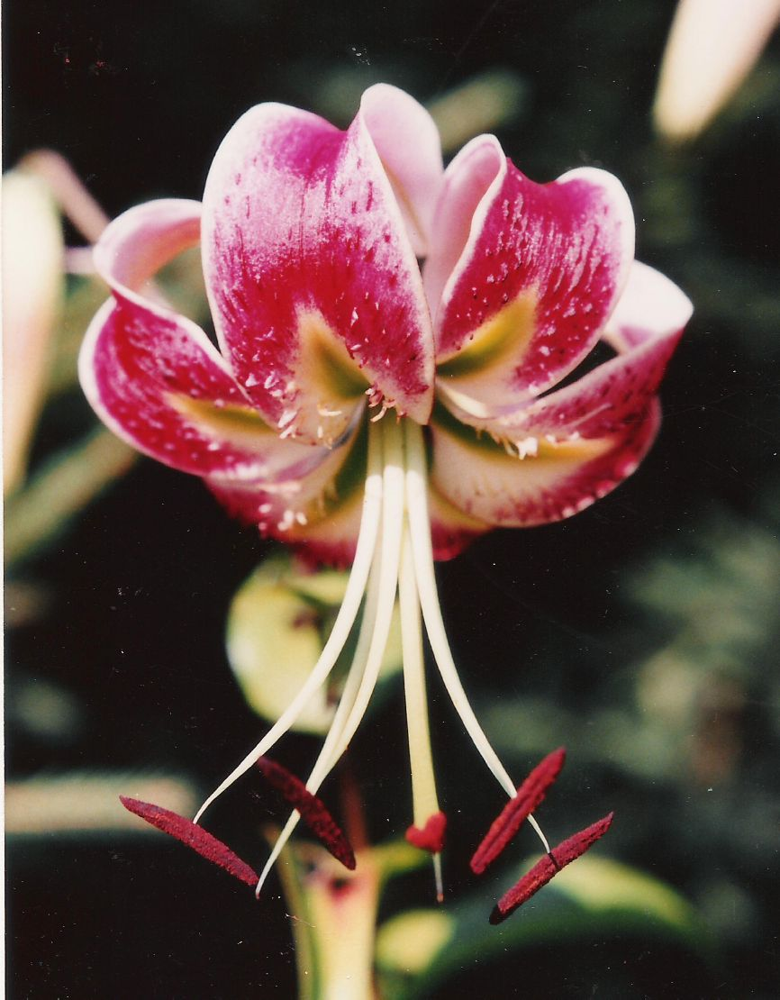
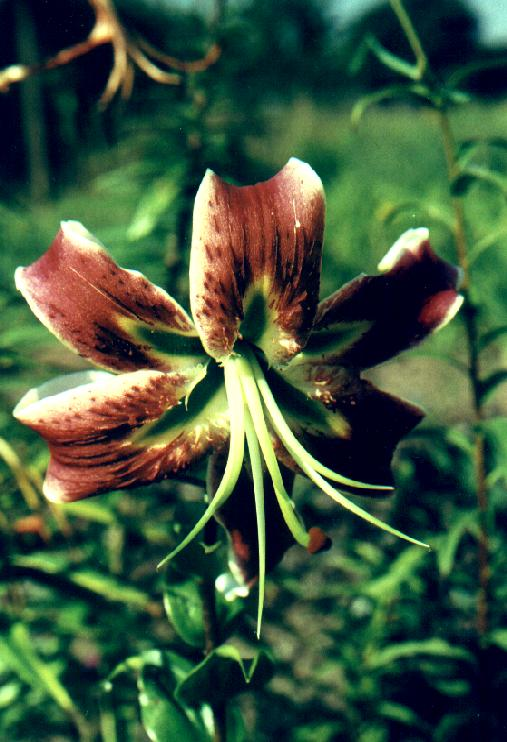

Similar to Black Beauty, however the tepals are not twisted, substance is better. E2 is triploid and has been sterile so far.

Flower color is a little muddy, not as exciting as many other Orienpets. Flower bigger than E2. Haven't counted chromosomes yet. Pollen is fertile, making up to 30 fully developped seeds on some Orienpets.